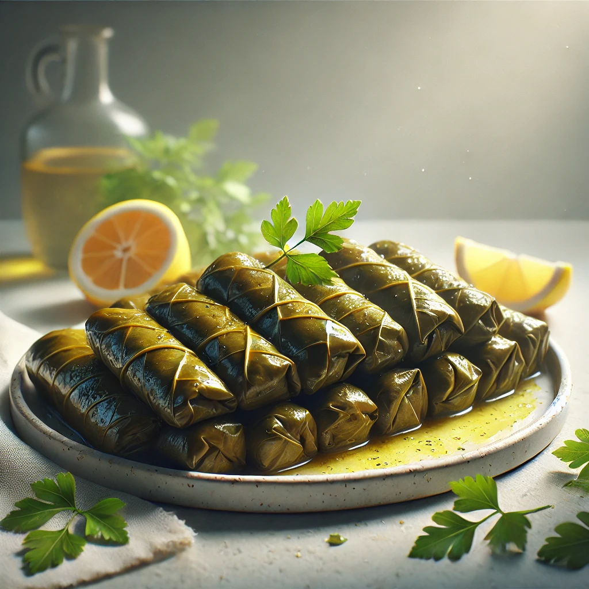
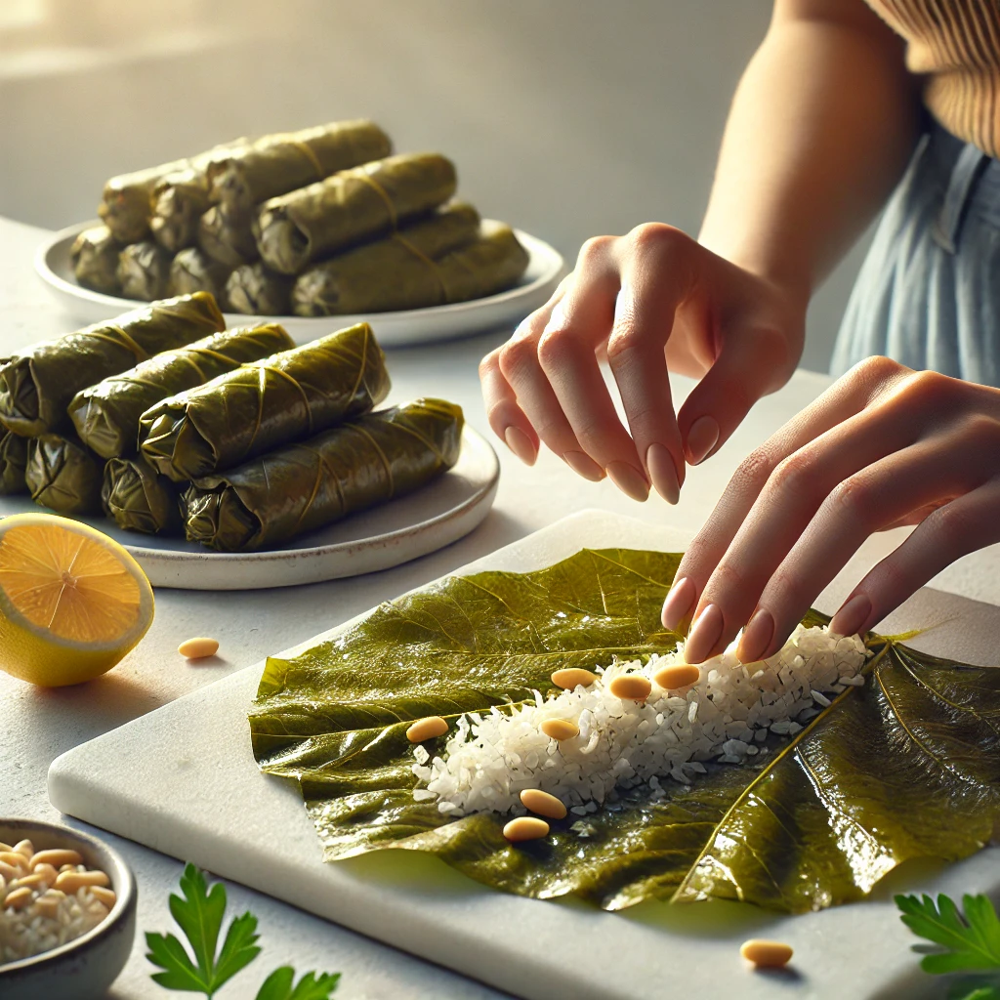
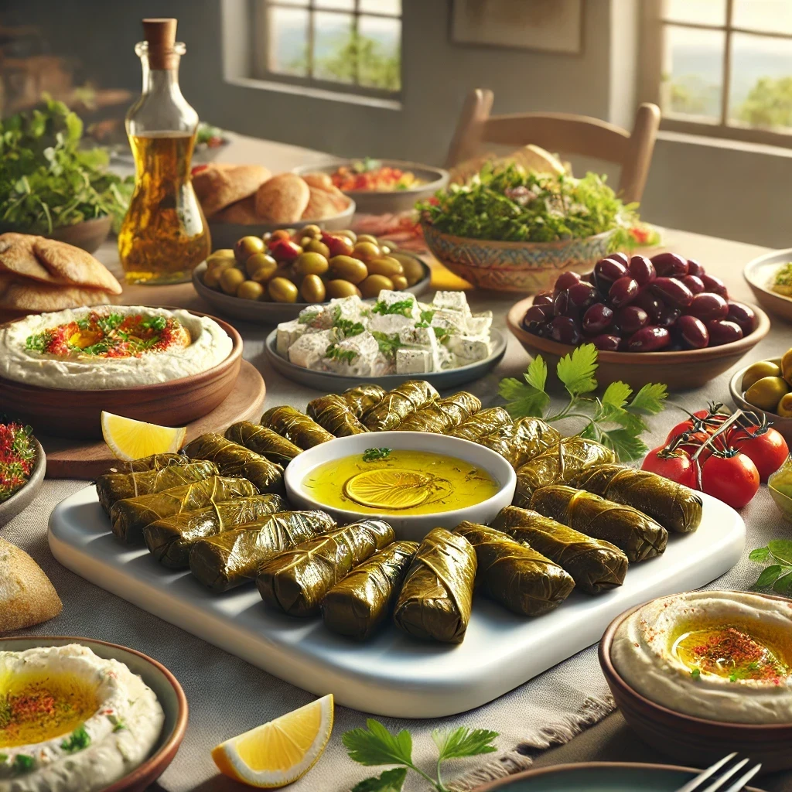

A vegan Mediterranean favorite with herbed rice, pine nuts & currants.
Known as "Zeytinyağlı Yaprak Sarma" in Turkish, these stuffed grape leaves are a staple in Mediterranean cuisine. The recipe is traditionally vegan and served cold with lemon wedges. They are often prepared for gatherings and celebrations, showcasing the delicate balance of herbs, spices, and textures unique to Turkish cooking.


| Calories | 210 |
| Fat | 10g |
| Carbohydrates | 26g |
| Fiber | 3g |
| Protein | 4g |
| Sodium | 280mg |